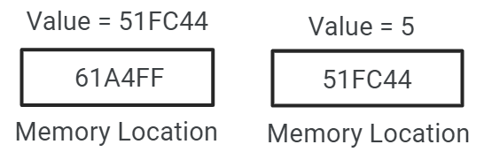
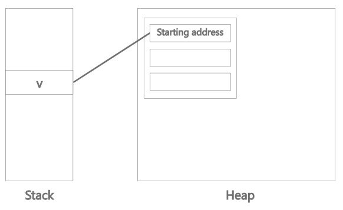

রেফারেন্স টাইপের মেমোরি বন্টন
আমরা যদি রেফারেন্স টাইপ এর ক্ষেত্রে মেমোরি allocation দেখতে চাই।
একটি নন-প্রিমিটিভ বা রেফারেন্স টাইপ variable ডিক্লেয়ার করি,
Flower x = new Flower(5);
এখন আমরা জানি কিভাবে একটি ক্লাসের অবজেক্ট declare করতে হয়।
এখানে x হচ্ছে Flower ক্লাসের এর একটি রেফারেন্স variable। new দিয়ে Flower ক্লাসের একটি অবজেক্ট তৈরি করা হয়েছে যেখানে 5 হচ্ছে Flower ক্লাসের কোন একটি int টাইপ variable এর value এবং এই অবজেক্ট টির জন্য একটি মেমোরি allocate করা হয়েছে । এবং এই allocated লোকেশান কে রেফার করা হয়েছে x এর মাধ্যমে।
তাহলে মেমরি তে এর representation হবে অনেকটা এরকম,

এই চিত্র লক্ষ্য করলে আমরা দেখতে পারবো যে 61A4FF এই মেমরি এড্রেস এ x এর মান যেই লোকেশন এ রাখা আছে সেই লোকেশন টি রাখা আছে। তার মানে প্রথম লোকেশান টি অন্য একটি লোকেশন কে রেফার করে। এই জন্য এই ধরনের ডাটা টাইপ কে আমরা বলছি রেফারেন্স টাইপ।
তবে প্রকৃতপক্ষে memory allocation আরও জটিল একটি বিষয়। একটি মেমোরি অ্যাড্রেস এ একটি int কে রাখা সম্ভব নয়। কারন একটি মেমোরি অ্যাড্রেস এ ১ বাইট জায়গা থাকে। int যেহেতু ৪ বাইট জায়গা দখল করে সেহেতু int এর 4 টি মেমোরি অ্যাড্রেস লাগবে। যে অ্যাড্রেস টি আমি উদাহরণ স্বরূপ দিয়েছি সেটিকে আমরা starting address বলতে পারি। রেফারেন্স টাইপ বোঝানোর জন্য এই উদাহরণ টি দেওয়া।
এবার আরও বড় একটি উদাহরণ দেই,
একটি ক্লাস তৈরি করি,
Vehicle.java
Class Vehicle{
Int wheels;
Int windows;
Int weight;
Vehicle(){} // Constructor
}
Constructor এর সাহায্যেই অবজেক্ট তৈরি করতে হয়। Constructor নিয়ে একটু পরেই বিস্তারিত আলোচনা করব।
ক্লাসটি তৈরি করার পর main ক্লাসের main মেথড এ একটি অবজেক্ট তৈরি করি।
Main.java
public class Main {
public static void main(String[] args) {
Vehicle v = new Vehicle();
}
}
নিচের চিত্রটি লক্ষ করি।
এখানে দুটো জিনিস দেখতে পারছি। একটি Stack memory অন্যটি Heap memory.

স্ট্যাক স্পেস মূলত method execution এবং local ভেরিয়েবলের ক্রম সংরক্ষণের জন্য ব্যবহৃত হয়। এটি সর্বদা স্টোর কৃত ব্লকগুলি LIFO(Last in first out) ক্রমে স্ট্যাক করে।
অন্যদিকে হিপ মেমরি dynamic memory allocation ব্যবহার করে মেমরি ব্লকগুলি বরাদ্দকরণ এবং ডিলিট করার জন্য নিয়োজিত।
এখন যদি Vehicle ক্লাসের অবজেক্ট দিয়ে চিত্রটি বোঝাতে চাই,
এখানে v হচ্ছে Vehicle এর একটি রেফারেন্স variable যা Vehicle এর অবজেক্ট কে রেফার করছে।
Vehicle class এর object এর জন্য কি পরিমান মেমোরি দরকার তা heap মেমরিতে allocate করে সেই মেমোরি ব্লক এর প্রথম অ্যাড্রেসটি stack স্পেস এ অবস্থানরত v এর কাছে সংরক্ষিত থাকে।
এসব না জানলেও কোডিং করতে সমস্যা হবে না। তবে ধারণা থাকা ভাল।
Created with the Personal Edition of HelpNDoc: Revolutionize Your CHM Help File Output with HelpNDoc